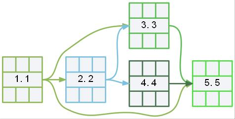

Построение сетевого графика
Сетевой график – это ориентированный граф, где в вершинах располагаются выполняемые работы, дугами – изображается связь между ними. Каждая вершина содержит несколько параметров, используя необходимые формулы можно рассчитать значения в каждой ячейке (рис. 1, формулы (1-5))
| <Номер работы>.<Название задачи> | ||
Рис. 1. Вершина сетевого графика с параметрами
где
- текущая работа
- раннее начало
- длительность работы
- раннее окончание
- позднее начало
- позднее окончание
- временной резерв
Описание и длительность необходимых работ представлены в таблице 1.
| Номер работы |
Описание работы | Длительность (в днях) |
|---|---|---|
| 1. | 23423 | 12 |
| 2. | 4 | 2 |
| 3. | 324324 | 3 |
| 4. | 4324 | 4 |
| 5. | 4 | 5 |
| 6. | 4324 | 3 |
| 7. | 432432432 | 4 |
| 8. | 32 | 3 |
| 9. | 32 | 2 |
| 10. | 32 | 2 |
| 11. | 423423 | 3 |
| 12. | 234 | 4 |
Последовательность выполнения работ, которая была указана в окне ввода программы представлена на схеме (рис. 2).
{kind=link}
Рис. 2. Последовательность необходимых работ
Рассчитаем значения параметров раннего начала и раннего окончания работ, используя формулы (1), (2). В первой вершине раннее начало работы будет равно нулю. Все остальные вычисления размещены в блоке ниже и на сетевом графике (рис. 3):

Рис. 3. Результаты вычислений раннего начала и окончания работ
Следующий этап построения сетевого графика заключается в нахождении позднего окончания, позднего начала и резерва времени проводимых работ. В конечной работе «12. 234» значения позднего начала и окончания работ соответствуют раннему началу и раннему окончанию работ. Все расчеты (рис. 4) проводятся от последней работы в обратном направлении стрелочек по формулам (3), (4), (5):
{kind=link}
Рис. 4. Результаты построения сетевого графика
Вычислим резервы времени по каждому из путей: